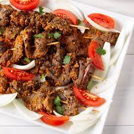

Suya

Description:
This meat is literally crack (not bumcrack, though I know some of you fckers would love that). Learn the recipe
correct and you can make this for yourself at uni!
Ingredients:
- Meat
- Pepe
- Onion (if you add this your hard drive is filthy, please click this
link)
Steps:
- Wash your meat unless you love e coli.
- Add some supa hot pepe.
- Fry that up.
- Serve and enjoy! (yes, it's that simple)